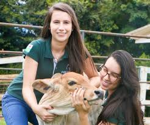

Curriculo Rafaella
Qualificações
Faculdade de Medicina Veterinária (2028-2032)
Pós Graduação em clínica e cirurgia de grandes (2032-2033)
Mestrado e Doutorado em Ciências Veterinária
Cursos Complementares
Clínica de Especialidades-Medicina de Felinos
Áreas Aplicadas- Zootecnia-Genética Veterinária
Faculdade
Universidade Estadual de Londrina (UEL)
Duração-5 Anos-2 Anos de Especialização
